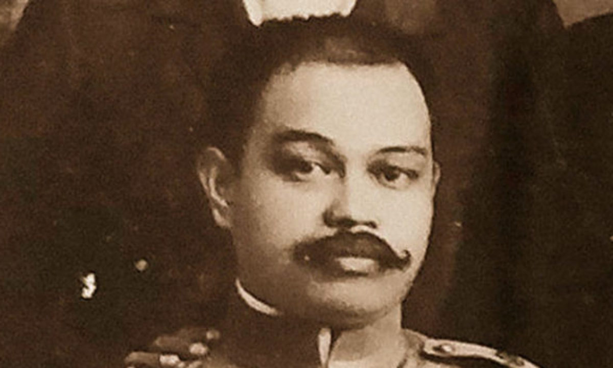

Antonio Luna de San Pedro y Novicio Ancheta
Regarded as one of the fiercest generals of his time

Antonio Narciso Luna de San Pedro y Novicio Ancheta or simply known as Antonio Luna was a
Filipino army general who fought in the Spanish–American War,
Philippine Revolution, and Philippine–American War
Time line of General Luna's Life
- 1866. October 29 - Antonio Luna is born.
- 1872. January 20 - Cavite Mutiny.
- 1881 - Bachelor of Arts, Ateneo Municipal de Manila. Studied two years at the University of Santo Tomas, earning first prize for the paper, Two Fundamental Bodies of Chemistry.
- 1888. October 16 - Antonio Luna writes to Mariano Ponce. This letter would be used as an exhibit in Rizal’s trial in December, 1896:
- 1889 - From the memoirs of Luna’s good friend, Jose Alejandrino:
- June 23, 1898 - Revolutionary Government Established.
- July 1898 - Luna arrives in the Philippines. Alejandrino meets Luna
- July 23, 1898 - In The Roots of the Filipino Nation, O.D. Corpuz writes
- July 25, 1898 - General Wesley Merritt, commander of Eighth Corps, U.S. Expeditionary Force, arrived in the Philippines.
- July 30, 1898 - U.S. President McKinley and his Cabinet submitted to Ambassador Cambon a counter-proposal to the Spanish request for ceasefire.
- August 11, 1898 - U.S. Secretary of State Day and French Ambassador Cambon, representing Spain, negotiated the Protocol of Peace.